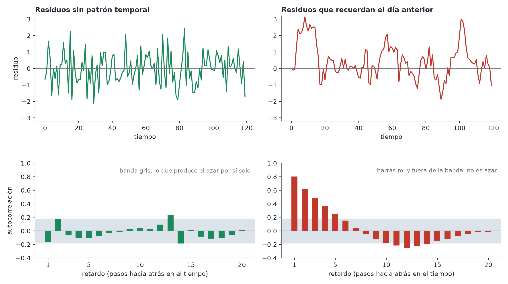

Datos de series temporales
En pocas palabras: cuando tus observaciones están ordenadas en el tiempo, el valor de hoy suele estar correlacionado con el de ayer, y esa correlación, si se ignora, puede hacer que las conclusiones de un modelo parezcan más seguras de lo que deberían.
Por qué puede importar el orden temporal
Si Mia mide el colesterol LDL de un paciente cada pocas semanas durante un año, el valor de hoy probablemente se parezca al anterior: la dieta, las dosis de medicación y los cambios de estilo de vida se arrastran y no se reinician al azar entre visitas. Este tipo de dependencia se llama autocorrelación (autocorrelation). Un modelo que trata cada medida como un dato independiente e intercambiable (como hace la regresión ordinaria) asume que cada una aporta información independiente, un supuesto que la autocorrelación incumple.
A menudo es lo bastante pequeña como para ignorarla
No todo conjunto de datos con una columna de fechas necesita un tratamiento especial de series temporales. Si compruebas que la correlación que exista entre un instante y el siguiente es pequeña o no es estadísticamente detectable, tratar los datos como si cada punto fuera independiente es una aproximación perfectamente razonable: no hace falta recurrir a un modelo más complejo solo porque haya una columna de fechas. El primer paso correcto es siempre comprobar, no asumir en un sentido ni en otro.
Cómo comprobarlo
Ajusta tu modelo habitual y luego busca en sus errores sobrantes (los residuos) algún patrón a lo largo del tiempo: un gráfico de «residuo en el instante t frente a residuo en el instante t-1» o un gráfico de autocorrelación, junto con una comprobación formal (la prueba de Ljung-Box) de si queda alguna correlación mayor de la que cabría esperar por ruido.

Si hay autocorrelación: dos soluciones distintas según tu objetivo
- Si solo te importa obtener bien la incertidumbre (errores estándar / intervalos de confianza) y la estimación puntual en sí es correcta: usa errores estándar «HAC» o «Newey-West», una corrección que ensancha tus intervalos de confianza de forma adecuada sin cambiar el modelo.
- Si la dependencia temporal forma parte de lo que estudias (p. ej., quieres predecir valores futuros o hay un fuerte patrón estacional que necesitas modelar): pasa a un modelo de series temporales propiamente dicho, como incluir el valor de ayer como predictor, o un modelo específico como ARIMA, pensado precisamente para describir cómo una serie depende de su propio pasado.
La conclusión
No recurras por reflejo a un modelo especializado de series temporales en cuanto veas una columna de fechas. Comprueba primero la autocorrelación y, si es despreciable, dilo y sigue adelante con el modelo más sencillo.